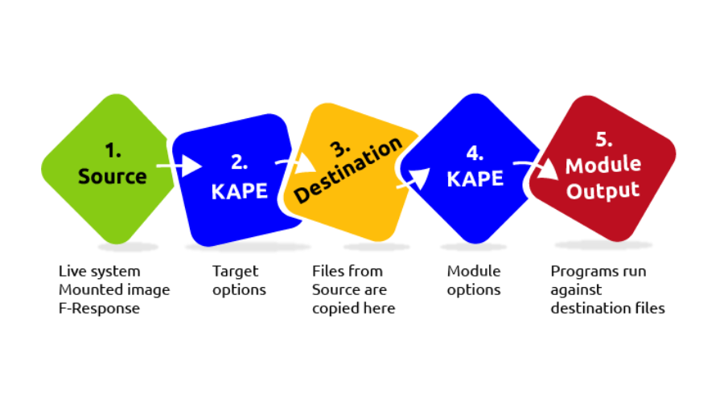
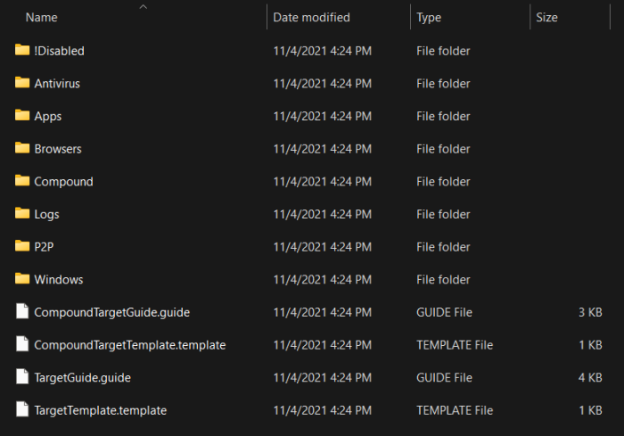
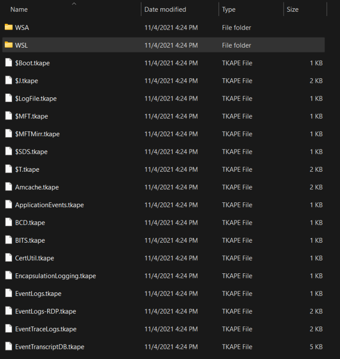
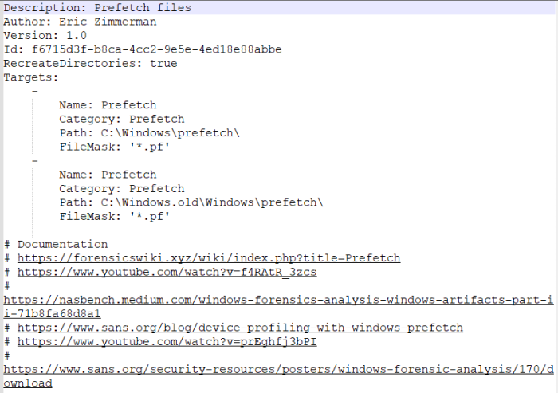
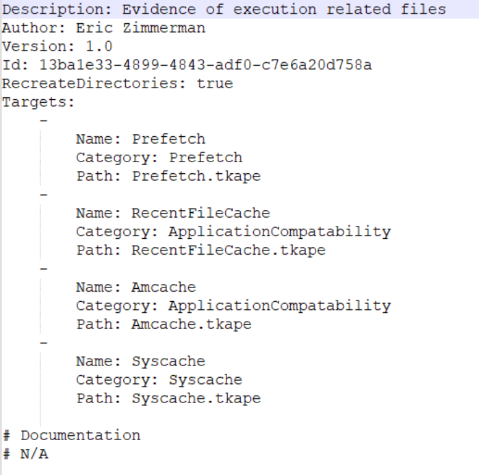
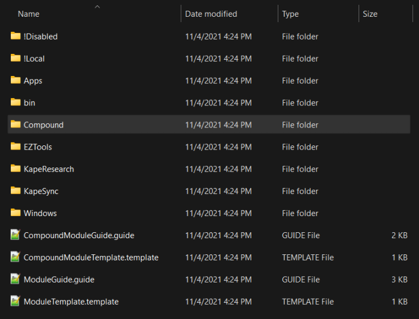
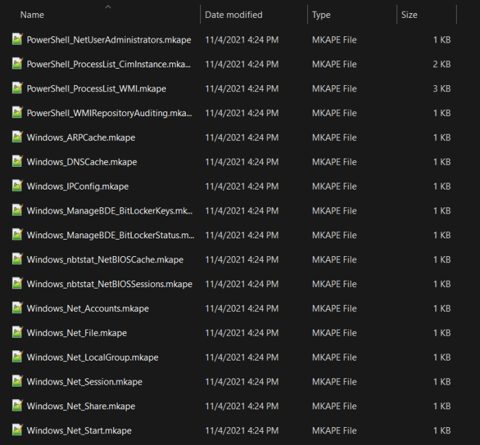
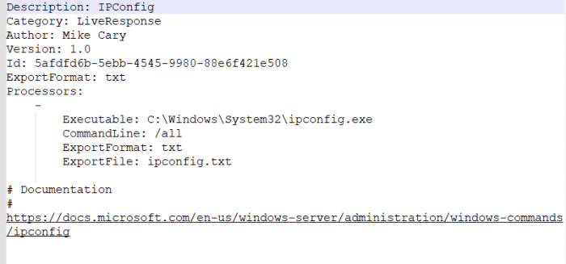
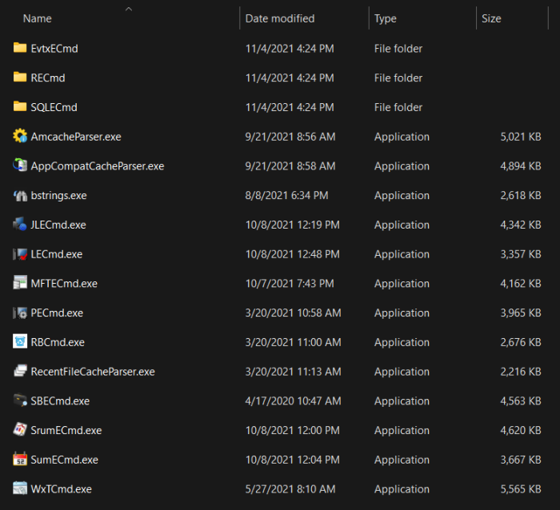

KAPE
KAPE
An introduction to Kroll Artifact Parser and Extractor (KAPE) for collecting and processing forensic artifacts
Introduction to KAPE:
Kroll Artifact Parser and Extractor (KAPE) parses and extracts Windows forensics artifacts. It is a tool that can significantly reduce the time needed to respond to an incident by providing forensic artifacts from a live system or a storage device much earlier than the imaging process completes.
KAPE serves two primary purposes, 1) collect files and 2) process the collected files as per the provided options. For achieving these purposes, KAPE uses the concept of targets and modules. Targets can be defined as the forensic artifacts that need to be collected. Modules are programs that process the collected artifacts and extract information from them. We will learn about them in the upcoming tasks.
How it works
KAPE is extensible and highly configurable. In essence, the KAPE binary collects files and processes them as per the provided configuration.
The collection of files (targets) KAPE adds the files to a queue and copies them in two passes. In the first pass, it copies the files that it can. This works for files that the OS has not locked. The rest of the files are passed to a secondary queue. The secondary queue is processed using a different technique that uses raw disk reads to bypass the OS locks and copy the files. The copied files are saved with original timestamps and metadata and stored in a similar directory structure.
Once the data is collected, KAPE can process it using modules. The modules can be independent binaries that run on the collected data and process them to extract information. For example, KAPE will collect and copy the Prefetch file to our target destination during the target collection. Running a Prefetch Parser (PECmd) module on this target will extract the prefetch file and save it in a CSV file.

As the above image shows, KAPE can extract targets from a Live system, a mounted image, or the F-response utility. KAPE does not need to be installed. It is portable and can be used from network locations or USB drives.
Target Options:
In KAPE's lexicon, Targets are the artifacts that need to be collected from a system or image and copied to our provided destination. For example, as we learned in the last room, Windows Prefetch is a forensic artifact for evidence of execution so that we can create a Target for it. Similarly, we can also create Targets for the registry hives. In short, Targets copy files from one place to another.
When we open the Targets directory of KAPE, this is what we will see:

The last four files at the bottom are guides and templates to create Targets and Compound Targets of our own. We will discuss Compound Targets later in this task. As you can see, the targets are grouped into different directories. Let's check out the Windows directory to see what we have:

We can see different .tkape extension files. This is how a Target is defined for KAPE. A TKAPE file contains information about the artifact that we want to collect, such as the path, category, and file masks to collect. As an example, below is how the Prefetch Target is defined.

This TKAPE file tells KAPE to collect files with the file mask *.pf from the path C:\Windows\prefetch and C:\Windows.old\prefetch.
Notice that we have the C:\Windows.old path listed here as well. This path contains files retained after Windows has updated to a new version. For forensic analysis, we can also find interesting historical artifacts from this directory.
Compound Targets:
KAPE also supports Compound Targets. These are Targets that are compounds of multiple other targets. As mentioned in the previous tasks, KAPE is often used for quick triage collection and analysis. The purpose of KAPE will not be fulfilled if we have to collect each artifact individually. Therefore, Compound Targets help us collect multiple targets by giving a single command. Examples of Compound Targets include !BasicCollection, !SANS_triage and KAPEtriage. We can view the Compound Targets on the path KAPE\Targets\Compound. The following image shows what a Compound Target for evidence of execution looks like:

The above Compound Target will collect evidence of execution from Prefetch, RecentFileCache, AmCache, and Syscache Targets
!Disabled
This directory contains Targets that you want to keep in the KAPE instance, but you don't want them to appear in the active Targets list.
!Local
If you have created some Targets that you don't want to sync with the KAPE Github repository, you can place them in this directory. These can be Targets that are specific to your environment. Similarly, anything not present in the Github repository when we update KAPE will be moved to the !Local directory.
Module Options:
Modules, in KAPE's lexicon, run specific tools against the provided set of files. Their goal is not to copy files from one place to another but rather run some command and store the output. Generally, the output is in the form of CSV or TXT files.
This is what the Modules directory looks like in KAPE:

Similar to the previous task, we see guides and templates for creating Modules and Compound Modules. We also see the !Disabled, !Local and Compound directories, which are similar to what we saw in the previous task. We will not discuss these again, as we discussed them in the last task. We see that most of the Modules are grouped together in different directories. One thing we find different is the bin directory. We will discuss that in a bit. For now, let's open the Windows directory and see what we have there:

Here we see files with the .mkape extension. These are understood as Modules by KAPE. Let's open an MKAPE file and see how it is structured. The following image shows the Windows_IPConfig MKAPE file.

Notice that the MKAPE file tells KAPE about the executable that has to be run, the command line parameters of the executable file, the output export format, and the filename to export to. But what if the executable that we want to run is not present on the system? This brings us to the bin directory.
The bin directory:
The bin directory contains executables that we want to run on the system but are not natively present on most systems. KAPE will run executables either from the bin directory or the complete path. An example of files to be kept in the bin directory are Eric Zimmerman's tools, which are generally not present on a Windows system. We used them extensively in the Windows Forensics rooms.

GUI Mode:
After selecting one/or more options. At the bottom of the screen, we get to equivalent command. Thus, use it as you will. Lets focus on the command.
Command Line Mode:
kape.exe --tsource C: --target KapeTriage --tdest C:\Users\thm-4n6\Desktop\Target --mdest C:\Users\thm-4n6\Desktop\Module --module !EZParser
Please note that we will need to run this command in an elevated shell (with Administrator privileges) for KAPE to collect the data.
Batch Mode:
KAPE can also be run in batch mode. What this means is that we can provide a list of commands for KAPE to run in a file named _kape.cli. Then we keep this file in the directory containing the KAPE binary. When kape.exe is executed as an administrator, it checks if there is _kape.cli file present in the directory. If so, it executes the commands mentioned in the cli file. This mode can be used if you need someone to run KAPE for you, you will keep all the commands in a single line, and all you need is for the person to right-click and run kape.exe as administrator. For example, if we have to perform the same task as we did earlier in this task using batch mode, we will have to create a _kape.cli file with the following content:
--tsource C: --target KapeTriage --tdest C:\Users\thm-4n6\Desktop\Target --mdest C:\Users\thm-4n6\Desktop\Module --module !EZParser
When we run kape.exe, it will perform the same tasks as when we ran it through CLI above.